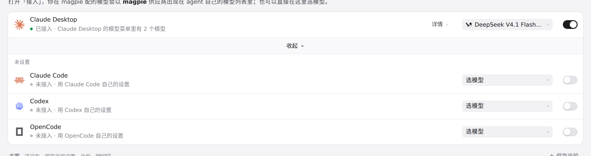
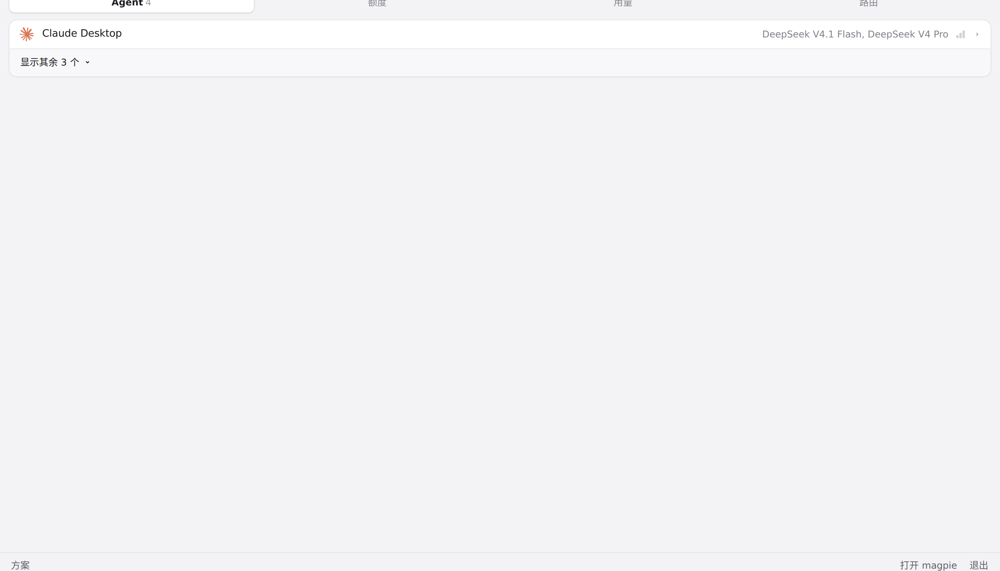
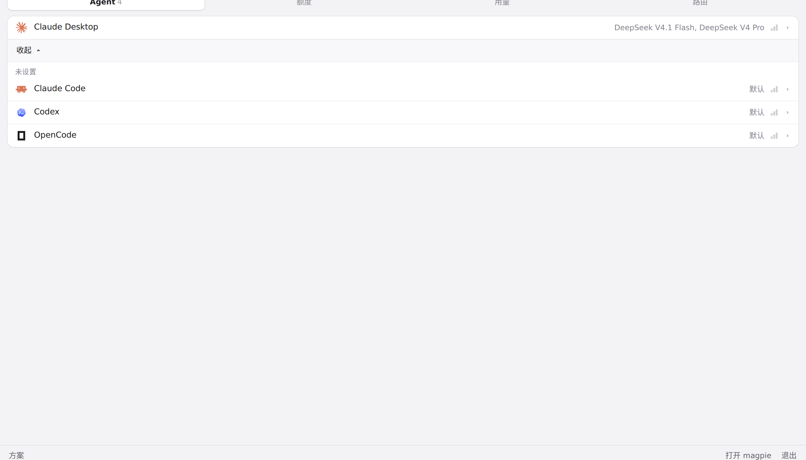

#728 界面预览
commit 9a75954 · 回到 PR · diff 给 magpie 新增了一个 Agent：Mister Morph（morph）。Agent 列表和菜单栏快捷面板里会多出它的一行（自带图标、按 ~/.morph 或 $MISTER_MORPH_CONFIG 检测），行内的模型菜单可选 magpie 的模型并把它写入 ~/.morph/config.yaml 指向网关，另有一个 effort 项；同时 morph 被加入 NO_PICKER。
红线是鼠标走过的轨迹，红色圆环是一次点击；底部文字是这一步在做什么。空格暂停，← → 逐段查看。
Agent 列表里的 Mister Morph · Agent 页默认显示的列表

Agent 列表里的 Mister Morph · 展开后的 Agent 列表

快捷面板里的 Agent 列表 · 菜单栏快捷面板的 Agent 页

快捷面板里的 Agent 列表 · 展开后的快捷面板列表